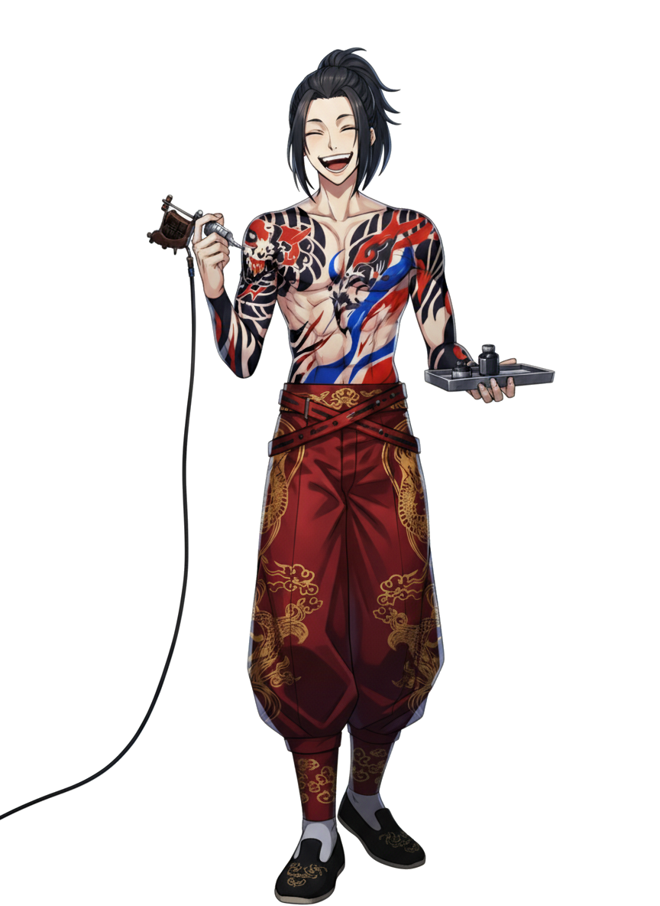

性格
いい意味で大雑把で、人付き合いにおいて細かいことを気にしない気風の良さがある。基本的に気楽に振る舞っているが、仕事の場では極端に集中力を発揮する職人気質。痛みに強く、また他人の痛みにも鈍感であるため、刺青の施術中に客が悲鳴を上げても「大丈夫だって」と笑って受け流す。仲間想いではあるが、情に流されるよりは「今を楽しむ」ことを重んじている。
仕事について
刺青屋として赤組の構成員や顧客の肌に文様を刻む。彼の刺青はただの装飾ではなく、呪術的な力を帯びていると噂される。護符のように持ち主を守るものもあれば、逆に「刻まれた者を呪縛する」ものもある。綾自身は深い意味を明かそうとせず、「柄が格好いいから彫ってるだけ」と笑う。裏社会の構成員にとっては、彼の刺青を入れることが一種のステータスでもある。
過去
暗黒中華街の外縁部で生まれ育ち、幼い頃から路地裏で生きる不良少年だった。刺青は元々彼自身の「生きた証」として刻んだものだが、やがてそれをきっかけに「彫り師」としての才覚を発揮するようになった。若くして刺青の腕を認められ、赤組に引き込まれた。血と墨にまみれた生活の中で育ったせいか、死や暴力に対して恐怖心が薄い。
能力
彫師としての高い技術に加え、独学で呪術や護符の図案を研究している。彼の彫る刺青は、施術時に特殊な薬液や血を混ぜることで、持ち主に異常な耐久力や狂気を与える場合がある。また、戦闘時には彫師用の刃物を武器にし、素早い動きで相手に切りかかる。痛みに鈍感なため多少の傷では怯まない。